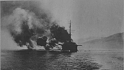
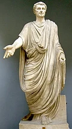
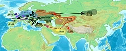
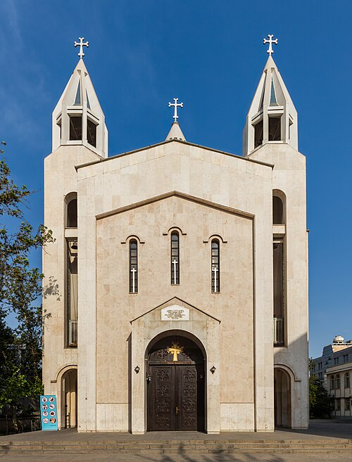

the free encyclopedia that anyone can edit. 262,745 active editors - 7,241,428 articles in English

The Noemvriana was an armed confrontation in Athens on 1 December 1916 between the Kingdom of Greece and the Allied Powers and their supporters. The crisis arose from disputes over Greek neutrality during the First World War. The Allies feared a secret alliance between King Constantine I and the Central Powers that could endanger their army bivouacking in Thessaloniki. The establishment of Eleftherios Venizelo's Allied-backed provisional goverment in Thessaloniki to create an army in assistance to the Allies divided Greece. Failed negotiations prompted to land in Athens to compel the surrender of war materiel. They encountered organized resistance from royalist forces, triggering hours of fighting before a negotiated withdrawal. Their departure was followed by royalist mobs attacking Venizelists across Athens, marking the height of the National Schism. Following an Allied naval blockade (pictured) and Constantine's abdication, Greece joined the war, helping to secure the Allied victory. (Full article)September 18

AAD 96 - Nerva (depicted), the first of the "Five Good Emperors" of ancient Rome, came to power following the assassination of his predecessor Domitian.

Various sound laws have been proposed by historical linguists to explain how modern Indo-European languages and their subfamilies diverged from their Proto-Indo-European ancestor. The Indo-European language family comprises a vast number of languages and dialects spoken throughout the world today; these languages are descended from a common ancestor know as Prot-Indo-European, which scholars estimate was spoken about six thousand years ago. While it is generally thought that the Anatolian languages broke off first, the internal relations of the other widely-accepted subfamilies - Albanian, Armenian, Balto-Slavic, Celtic, Germanic, Hellenic, Indo-Iranian, Italic, and Tocharian - are unclera and the subject of scholary debate. (Full list...)

Saint Sarkis Cathedral is an Armenian Apostolic cathedral in Tehran, Iran, named after Saint Sarkis the Warrior. Built between 1964 and 1970, it is the cathedral of the Armenian Diocese of Tehran and the largest church in the city. The single-nave concrete building is clad in white marble and has a hexagonal dome, two belfries and a semicircular altar decorated with biblical paintings. The church was renovated in 2000. Its courtyard contains a white-marble memorial to the Armenian genocide, unveiled in 1973. This photograph shows the facade of Saint Sarkis Cathedral in 2016.